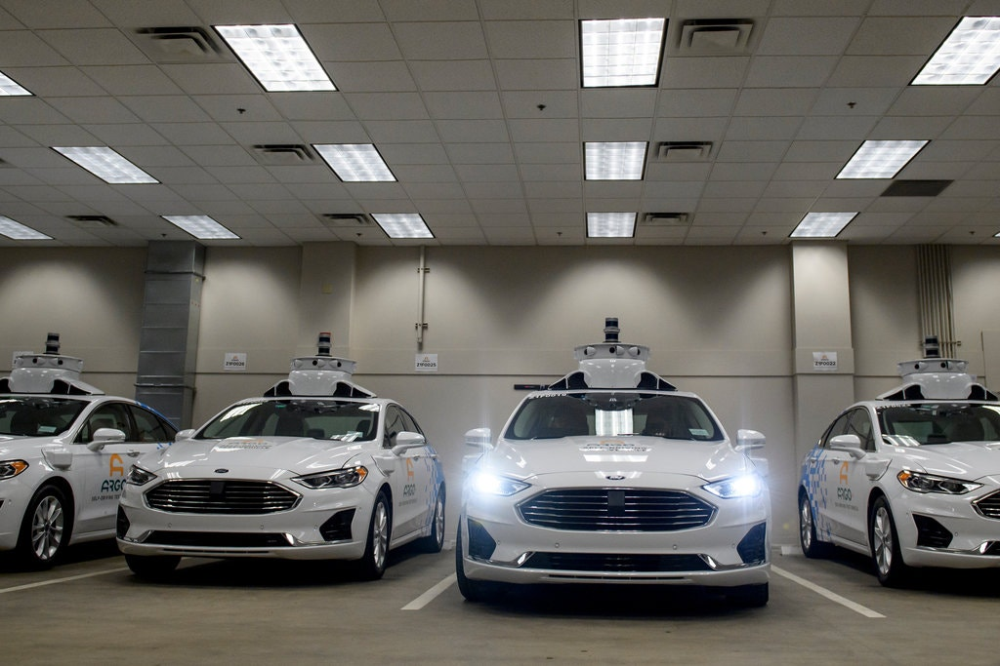

Limitations to Autonomous Vehicles
Driving on busy roads are always a new experience, whether it be; automobile accidents, roadkill, bad weather, crazy drivers, or pedestrians there is always something that could happen out on the roads that you may not be prepared for. This is a problem for self-driving cars as well, although the technology put into these machines are extraordinary there are just events that cannot be accounted for. Human error is one of those events, people drive all sorts of ways; aggressive, defensive, fast, slow and everywhere in between, AV can’t know how every car out on the roads will be driving, and this uncertainty is a problem when it comes to the safety of human drivers lives.
Additionally, since the majority of autonomous vehicles are just software they are at risk for malfunctions, crashes and hacking. This poses a large threat since people’s lives are on the line, if a person were able to gain access and control of these cars when they are out on the road serious damage can follow. There just isn’t an appropriate amount of certainty to say without hesitation that these vehicles can go out and there is a guarantee that they will make it back in one piece.
If autonomous vehicles are the future there will be many positive changes but there will also be some drawbacks that come with these changes, affecting employee to politics. Taxis, Uber, and Lyft drivers are at risk of losing their jobs because driverless cars can do their jobs without error and with more efficiently. Truck drivers could potentially lose their jobs as well, with the strict limit of how long a truck driver can drive each day increasing the delay of delivering products. Driverless vehicles could drive non-stop until the payload reaches its destination, increasing profit and making everyone in the process happier.
The potential for robotic cars is unmatched in regards to transportation, but reaching its full potential comes with millions of complications.
